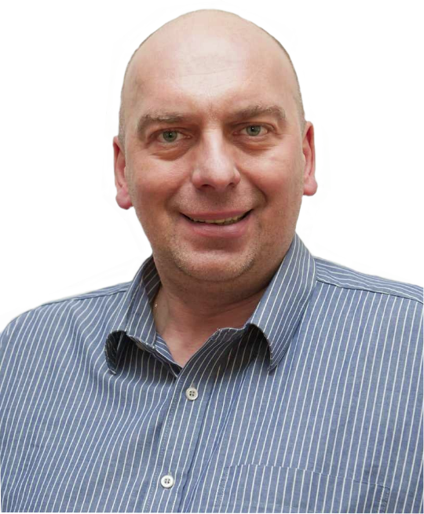
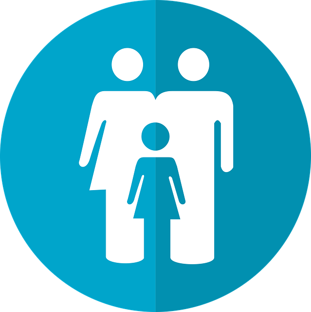
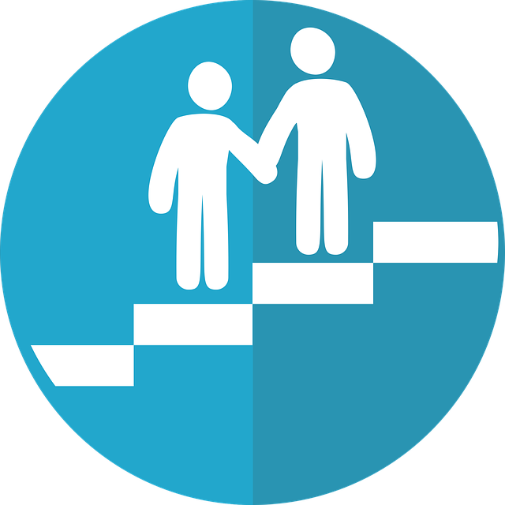
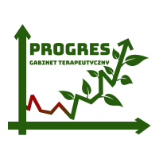

mgr Artur Tebień
Nazywam się Artur Tebień. W ciągu wielu lat pracy zawodowej udało mi się zdobyć zarówno wszechstronne wykształcenie, jak i różnorodne doświadczenie w zakresie szeroko pojętej pomocy psychologicznej, interwencji kryzysowej oraz pedagogiki resocjalizacyjnej.
Jestem:
• magistrem Pedagogiki Resocjalizacyjnej i Sądowej na Uniwersytecie Jana Kochanowskiego w Kielcach,
• certyfikowanym interwentem kryzysowym i specjalistą pomocy psychologicznej po Studium Pomocy Psychologicznej i Interwencji Kryzysowej (I i II stopnia) w Instytucie Psychologii Zdrowia w Warszawie,
• instruktorem terapii uzależnień (w trakcie certyfikacji specjalisty),
• certyfikowanym mediatorem sądowym wpisanym na listę Mediatorów Sądu Okręgowego w Krakowie,
• absolwentem ekonomii społecznej na Uniwersytecie Ekonomicznym,
• opiekunem medycznym
• policjantem z 20 – letnim doświadczeniem (w stanie spoczynku).
Pracowałem jako:• certyfikowanym interwentem kryzysowym i specjalistą pomocy psychologicznej po Studium Pomocy Psychologicznej i Interwencji Kryzysowej (I i II stopnia) w Instytucie Psychologii Zdrowia w Warszawie,
• instruktorem terapii uzależnień (w trakcie certyfikacji specjalisty),
• certyfikowanym mediatorem sądowym wpisanym na listę Mediatorów Sądu Okręgowego w Krakowie,
• absolwentem ekonomii społecznej na Uniwersytecie Ekonomicznym,
• opiekunem medycznym
• policjantem z 20 – letnim doświadczeniem (w stanie spoczynku).
• przewodniczący Gminnej Komisji Rozwiązywania Problemów Alkoholowych w Wieliczce,
• konsultant Urzędu Miasta i Gminy Wieliczka wspierający mieszkańców w zakresie pomocy psychologicznej, interwencji kryzysowej i pisania pism procesowych,
• specjalista pomocy psychologicznej w zakresie terapii i mediacji sądowej par w Powiatowym Centrum Pomocy Rodzinie w Wieliczce,
• wychowawca oraz indywidualny specjalista pomocy psychologicznej w zakresie terapii dzieci i młodzieży w Ośrodku Socjoterapii „Przystań” w Niepołomicach, w Domu Dziecka w Pawlikowicach i Pogotowiu Opiekuńczym w Skawinie,
• interwent kryzysowy oraz specjalista pomocy psychologicznej w Środowiskowym Centrum Zdrowia Psychicznego w Wieliczce,
• terapeuta zajęciowy w Środowiskowym Domu Samopomocy w Wieliczce,
• konsultant oraz wychowawca - wolontariusz w Świetlicy Terapeutycznej im. św. Kingi w Wieliczce oraz Przedszkolu „Montesorek” w Wieliczce,
• koordynator Młodzieżowego Koła Wolontariatu w Wieliczce przy Urzędzie Miasta i Gminy Wieliczka,
• członek zespołu interdyscyplinarnego w Gminie Wieliczka w zakresie tworzenia procedur Niebieskiej Karty, przeciwdziałania przemocy w rodzinie oraz realizowania programu naprawczego,
• kurator społeczny dla osób dorosłych Sądu Rejonowego w Krakowie i Wieliczce.
• konsultant Urzędu Miasta i Gminy Wieliczka wspierający mieszkańców w zakresie pomocy psychologicznej, interwencji kryzysowej i pisania pism procesowych,
• specjalista pomocy psychologicznej w zakresie terapii i mediacji sądowej par w Powiatowym Centrum Pomocy Rodzinie w Wieliczce,
• wychowawca oraz indywidualny specjalista pomocy psychologicznej w zakresie terapii dzieci i młodzieży w Ośrodku Socjoterapii „Przystań” w Niepołomicach, w Domu Dziecka w Pawlikowicach i Pogotowiu Opiekuńczym w Skawinie,
• interwent kryzysowy oraz specjalista pomocy psychologicznej w Środowiskowym Centrum Zdrowia Psychicznego w Wieliczce,
• terapeuta zajęciowy w Środowiskowym Domu Samopomocy w Wieliczce,
• konsultant oraz wychowawca - wolontariusz w Świetlicy Terapeutycznej im. św. Kingi w Wieliczce oraz Przedszkolu „Montesorek” w Wieliczce,
• koordynator Młodzieżowego Koła Wolontariatu w Wieliczce przy Urzędzie Miasta i Gminy Wieliczka,
• członek zespołu interdyscyplinarnego w Gminie Wieliczka w zakresie tworzenia procedur Niebieskiej Karty, przeciwdziałania przemocy w rodzinie oraz realizowania programu naprawczego,
• kurator społeczny dla osób dorosłych Sądu Rejonowego w Krakowie i Wieliczce.
Brałem także udział w licznych konferencjach naukowych na rzecz pomocy dzieciom i młodzieży z autyzmem, niepełnosprawnością intelektualną i zaburzeniami rozwojowymi oraz doskonaliłem się w zakresie wiedzy o uzależnieniach.
Obecnie prowadzę własny gabinet terapeutyczny, w którym oferuję szeroko pojętą pomoc psychologiczną, terapię uzależnień, mediacje sądowe, poradnictwo oraz interwencję kryzysową. Wspieram także dzieci i młodzież oraz udzielam wskazówek ich rodzicom i bliskim. Przyjmuję indywidualnie, pary i grupy. Wykorzystuję także swoje wieloletnie doświadczenie w pracy resocjalizacyjnej i sądowej. Potrafię pomóc w trudnych sytuacjach jak np. strata, rozwód, choroba, żałoba, konflikt, trudności rozwojowe, życiowe, emocjonalne, problem alkoholowy i inne.
Prywatnie jestem żonaty. Lubię podróże, spacery ze swoim psem labradorem, teatr, dobry film, muzykę i spotkania z ludźmi. W życiu stawiam przede wszystkim na rozwój osobisty, podnoszenie swoich kompetencji i profesjonalną pomoc swoim klientom.
Gabinet PROGRES
Zapraszam na ...

Porada psychologiczna
Rozmowa grupowa

Mediator sądowy
Pisma procesowe

Terapia uzależnień
Interwencja kryzysowa

oraz terapii uzależnień "PROGRES" w Wieliczce
mgr Artur Tebień
ul. Krakowska 15a 32-020 Wieliczka
Gabinet czynny w godzinach:
Poniedziałek - Piątek 8:00 - do godzin wieczornych
Sobota 9:00 - 12:00
tel. 696-613-855
Spotkania proszę umawiać telefonicznie
Przyjmuję różne formay płatności oraz wystawiam fakturę za usługę na życznie.
Dane kontaktowe:
Gabinet interwencji kryzysowej, pomocy psychologicznejoraz terapii uzależnień "PROGRES" w Wieliczce
mgr Artur Tebień
ul. Krakowska 15a 32-020 Wieliczka
Gabinet czynny w godzinach:
Poniedziałek - Piątek 8:00 - do godzin wieczornych
Sobota 9:00 - 12:00
tel. 696-613-855
Spotkania proszę umawiać telefonicznie
Przyjmuję różne formay płatności oraz wystawiam fakturę za usługę na życznie.